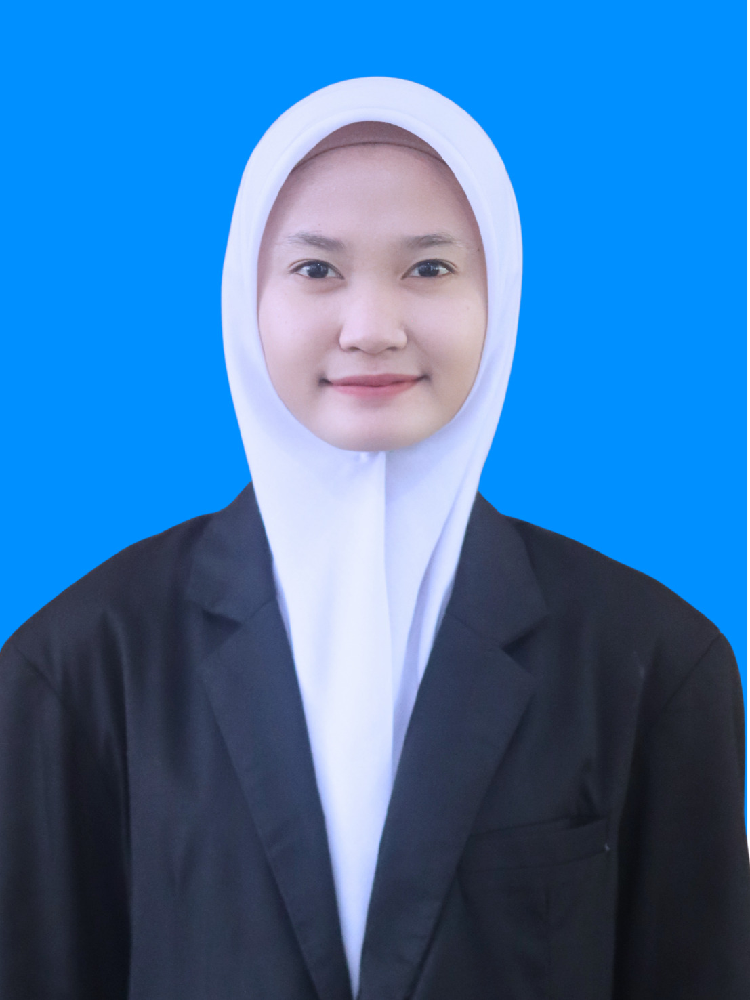

Mahasiswa Pendidikan Teknologi Informasi | Universitas Lampung | NPM: 2513025065
Pengertian, Sejarah, dan Tokoh Perintis Grafika Komputer.
Sistem Grafika Komputer.
Algoritma Pembentukan Garis (DDA & Bresenham).
Algoritma Pembentukan Lingkaran.
Algoritma Pembentukan Kurva Bezier.
Persamaan Misteri.
Halo! Saya Cindy Fatika Sari, mahasiswa Pendidikan Teknologi Informasi di Universitas Lampung. Portofolio ini merangkum perjalanan akademik saya, khususnya pada mata kuliah Grafika Komputer.